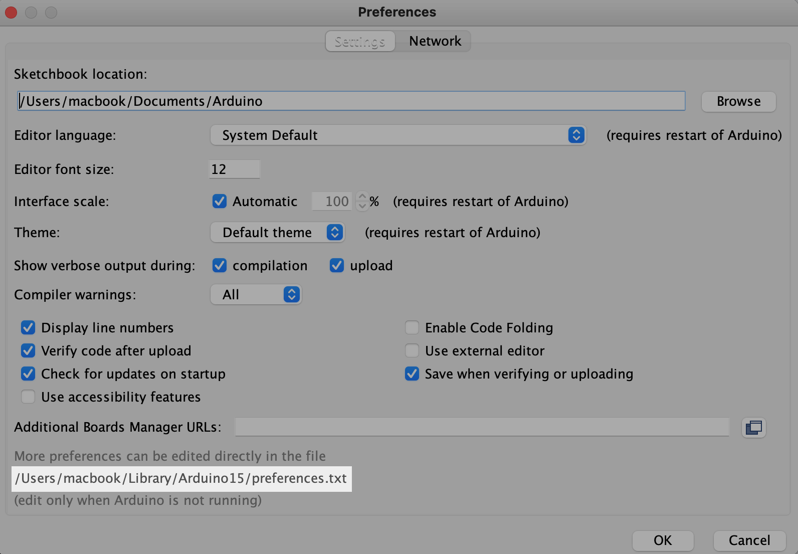
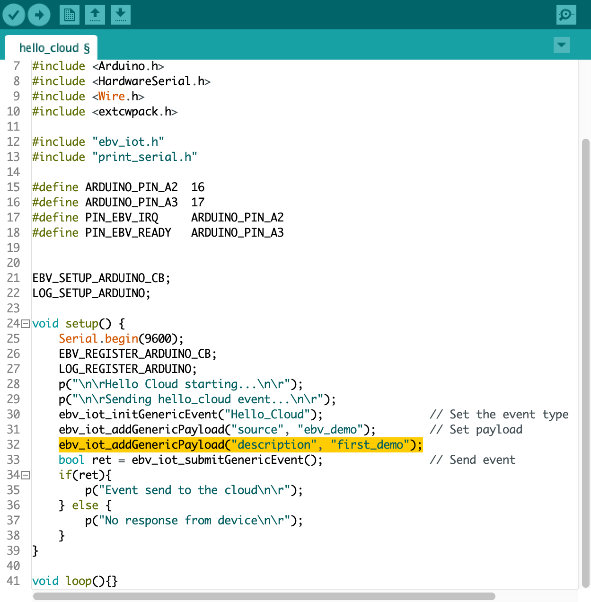

Getting Started
This document serves as a guide through the basic steps that are necessary to start building IoT applications with the Embever Cloud as a Module Development Kit and gives a brief overview of our stack. The goal is to provide just enough information to be able to get familiar with the IoT world without being too overwhelming. To be able to complete this guide, an Arduino compatible hardware will be necessary.
Embever IoT software library
To make it even simpler, Embever provides an additional software library that handles the ESP on its own. There is no need to fully understand our protocol and implement a custom software library to be able to use the Embever CaaM development board. With this simplicity, starting to work on an IoT application was never that easy, without the heavy proprietary communication protocol handling. The Embever IoT software library is platform-independent and does not contain any peripheral drivers. In this way, it can be easily integrated into any existing environment. To create sample applications, we chose the Arduino framework to make communication possible between an external device and the Embever CaaM development kit. In our mind, the Arduino Framework is a great tool to show how things work and the idea is easily adaptable to other platforms as well.
Summary
To summarize the above topics before starting to work with the examples:
- Configure the hardware by shorting the right solder jumpers based on the required behavior
- Connect the CaaM board with an external device
- Supply power to the system, the easiest way is to use a lithium polymer battery with a JST connector
Introducing the Embever Cloud System
Embever IoT Core is responsible to handle all messaging to and from a device. The Embever IoT Core provides an API to easily send and receive data from a device. Besides this, it can also be used to manage resources like devices and firmwares.
Activating the Embever Account
When an order is submitted for the Embever Cloud As A Module development kit, an account is automatically created with the given details and an email is sent to activate the newly created account. To set up the account simply follow the link in the received email. With the personal credentials, logging in to the Embever Cloud console or to the Embever Cloud Browsable API is now possible.
To manage the resources use the Embever Cloud Browsable API. Go to the https://api.embever.com/v2/devices/ where all the personal devices should be listed.
Connecting the device to the Embever Cloud System
Setting up the Arduino environment
The Arduino IDE is a well known integrated development environment to support all kinds of Arduino compatible devices. The Arduino IDE needs to be installed in order to compile the Embever IoT library. Moreover there are 2 necessary modifications that need to be done on the Arduino Wire library before it would be usable to work with the Embever IoT library. The Embever IoT library needs to send longer messages that the default Arduino Wire library can handle. The easiest way to locate them is to get information about the Arduino Core library location. The Arduino IDE carries this information under the Preference sub menu.

The following path shows the location of the arduino core. Using this
example, in this case the files can found in the following location:
/Users/macbook/Library/Arduino15/packages/arduino/hardware/avr/1.8.3/libraries/Wire/src/Wire.h
/Users/macbook/Library/Arduino15/packages/arduino/hardware/avr/1.8.3/libraries/Wire/src/utility/twi.h
| Note: This location will vary on other systems!
Change the following lines according to the following:
Wiring library modifications
| File | Location | Change from | Change to |
|---|---|---|---|
Wire.h |
line 29 | #define BUFFER_LENGTH 32 |
#define BUFFER_LENGTH 128 |
Twi.h |
line 34 | #define TWI_BUFFER_LENGTH 32 |
#define TWI_BUFFER_LENGTH 128 |
With this modification, the Embever IoT library will be able to send the right messages over I2C.
Setting up the Embever IoT library in Arduino IDE
To be able to use the Embever IoT library, it need to be installed to the Arduino IDE first. The Embever IoT library is depends on the CWPack library.
Download the libraries from the following links by the download source code button and select the .zip option:
Add the downloaded files to the Arduino IDE:
- 1 Open Arduino ID
- 2 Select:
Sketch / Include Library / Add .ZIP Library… - 3 Add both downloaded files in this way
To open an example from the Embever IoT library from the Arduino IDE
select File / Examples / Embever IoT Library / Hello_Cloud. Compile
the Sketch and Upload to the device and open the Serial Terminal from
the Arduino IDE to see the logs.
To see the result in the Embever Cloud System go to the Browsable API.
Modifying the Hello_Cloud example
Extending the Hello_Cloud example is a great way to get familiar with
the Embever IoT library and with the Embever Cloud System. Let's extend
the existing payload by adding another key value pair to it. Add the
following line just under line 31:
ebv_iot_addGenericPayload(\"description\", \"first_demo\");

Verify the result in the cloud system after the sketch was uploaded to the device. Working with the Embever IoT solution is fun because it has a lot of potential to build and deploy the IoT applications of the future. To see more examples, dig deeper in the library and read about the whole API, check the Embever IoT library documentation here.